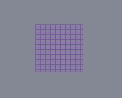

GridGeometry QML Type
A custom geometry provider for rendering grids. More...
| Import Statement: | import QtQuick3D.Helpers |
| Inherits: |
Properties
- horizontalLines : int
- horizontalStep : real
- verticalLines : int
- verticalStep : real
Detailed Description
This helper implements grid geometry, which allows showing a grid in a scene.
For example, the following snippet would display a grid with 19 cells in both directions in a scene that has one light. Without further transformations, the grid is facing the camera by default.

View3D {
anchors.fill: parent
camera: camera
PerspectiveCamera {
id: camera
position: Qt.vector3d(0, 0, 600)
}
DirectionalLight {
position: Qt.vector3d(-500, 500, -100)
color: Qt.rgba(0.4, 0.2, 0.6, 1.0)
ambientColor: Qt.rgba(0.1, 0.1, 0.1, 1.0)
}
Model {
scale: Qt.vector3d(100, 100, 100)
geometry: GridGeometry {
horizontalLines: 20
verticalLines: 20
}
materials: [ DefaultMaterial { } ]
}
}
See also Qt Quick 3D - Custom Geometry Example and Model.
Property Documentation
horizontalLines : int |
Specifies the number of horizontal lines in a grid. The default value is 1000.
horizontalStep : real |
Specifies the spacing between horizontal lines. The default value is 0.1.
verticalLines : int |
Specifies the number of vertical lines in a grid. The default value is 1000.
verticalStep : real |
Specifies the spacing between vertical lines. The default value is 0.1.